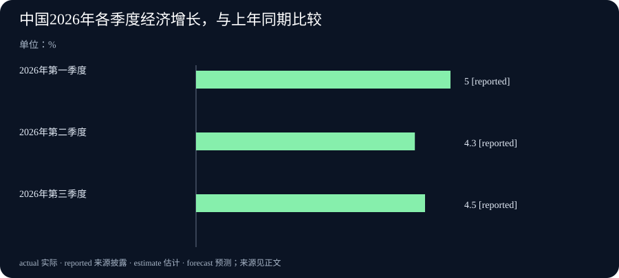

Daily Intelligence｜AI代理权限更细，经济数据要分开看
2026-10-20｜北京时间｜新闻查阅截止：2026-10-20 07:01:53+08:00，优先观察此前24小时的首次公开材料。两篇AI官方文章只写了10月19日，没有写几点发布，不能确认都严格处于这24小时内。经济与企业材料的发布日期、统计时期和限制见文末。
Today’s Thesis｜今天的判断
今天有两类值得分开看的变化。技术方面，微软宣布让人工智能（AI）代理的权限随任务和风险调整。代理是能调用工具、按任务采取行动的软件。NVIDIA与Jane Street公开一项模型计算优化，在指定测试中的速度为对照的1.14—1.82倍。商业与经济方面，美国钢铁企业Cleveland-Cliffs公布季度盈利，中国第三季度经济与去年同期相比的增速，较第二季度的同比读数回升，加拿大企业调查则显示不同收集时点的回答有差别。它们各自提供了具体信息。判断这些信息意味着什么，先要知道：测的是哪一步、哪家企业、哪个时期，以及哪些条件仍有限制。
Executive Summary｜先看三条变化
- AI代理拿到的权限，可以按任务收回：微软宣布更细的任务权限和动态风险控制。代理是能调用工具、按任务采取行动的软件；新安排要解决的是它能做什么、能做多久，以及风险变化后是否该停止。公告属于厂商说明，不能当作已消除风险的独立证明。微软官方详文
- 一项模型计算优化，已有特定条件下的测试结果：NVIDIA与Jane Street报告，优化后的Mamba-2模型底层计算程序，速度为指定Triton实现的1.14—1.82倍。Triton和cuTile是编写这类计算程序的工具；这不是整套训练或所有模型的提速幅度。NVIDIA技术文章
- 企业盈利、经济增长和受访者想法，回答不同问题：Cleveland-Cliffs第三季度合并净利润由上季亏损转为盈利；中国第三季度国内生产总值（GDP，衡量一段时期经济生产活动的总量）比去年同期增长4.5%；加拿大调查中，为衰退作计划或预算的受访企业占比下降。三者分别是公司财务、整体产出和调查回答，不能拼成一个统一的景气结论。公司业绩、中国国家统计局、加拿大央行调查
AI Daily｜AI与产品
微软10月19日的官方文章，把企业内部的AI代理看作需要管理访问权限的新使用者。代理可能读取文件、调用工具，或者修改资料。它能理解任务，不代表它应该一直保留全部权限。微软宣布的Dynamic Permissions，也就是随任务调整的权限，要把授权限制在需要的任务和时长内。任务改变或结束时，可以缩小或撤销权限。微软官方说明
同文还提出Dynamic Agent Risk和Dynamic Conditional Access，即随代理风险变化而调整访问条件。按微软描述，系统可改变代理允许读取、写入和调用的范围，必要时要求人类批准或停止运行。模型负责回答或规划，另一个权限系统决定它实际能做什么；两者不应混为一谈。比如，一个任务原本需要读取文件，途中却试图改写资料，就需要重新判断是否允许。这是帮助理解权限问题的例子，不是本期披露的一起已发生事故。
微软还称扩大了可发现的本地代理类别，列出的工具包括Claude Code、OpenAI Codex和GitHub Copilot。发现范围扩大，不等于已经证明相应风险都能被阻止。Project Perception在7月已经提出，本次新闻是面向内部代理的控制扩展，不是该项目首次发布。本期资料没有确认所有功能的正式开放范围、客户资格、价格或上线小时；厂商方案也尚不能替代独立防御效果测试。
另一篇10月19日的文章来自NVIDIA与Jane Street作者。他们用cuTile实现并优化AI模型Mamba-2的三个前向计算内核，公开了实现办法和测试。前向计算是模型根据输入算出结果的过程，内核则负责其中一段具体计算。这次的新信息是实现、优化方法与测试披露，Mamba-2模型和cuTile本身并不是当天才出现。NVIDIA与Jane Street作者正文
测试使用单张NVIDIA B300 SXM6计算芯片，与Triton开源内核实现比较。指定软件包括cuTile 1.5.0、Triton 3.7.1和PyTorch 2.13.0。作者报告优化后内核的速度为对照的1.14—1.82倍，代码通过NVIDIA的TileGym提供。这里保留配置，是为了说明数字适用的范围；普通读者需要记住的是，这个比较有明确对象，不能直接套用到自己的电脑或其他模型。官方代码仓库
作者明确说，这些只是内核级速度变化。训练还包含根据误差计算参数调整方向的后向计算，之后还要更新参数。这些步骤也会消耗时间。因此，一段程序更快，不表示整套训练快了同样倍数，更不表示模型回答更准确。本期没有独立复现这组结果，性能结论保留为作者在上述条件下的报告。
Business Daily｜商业与产业
美国钢铁企业Cleveland-Cliffs于10月19日公布截至9月底的第三季度业绩。财务表显示，合并收入从第二季度52.26亿美元增至第三季度56.12亿美元；合并净利润则从亏损1.34亿美元转为盈利1.65亿美元。合并表示把相关企业纳入同一套报表；收入不等于收到的现金，净利润也不等于现金流。公司将这些财务报表标为未经审计。Cleveland-Cliffs官方业绩
这是一家企业已经公布的季度结果，不能称为10月单月销售，也不能代表整个钢铁行业。需要继续看的是，盈利变化能否持续，以及销售、成本、订单和现金情况是否相互支持。本期采用的是合并净利润，不能把它和归属于股东的利润或其他调整后的盈利指标混用。对下一季度的管理层预期，也要与本次已经结束的季度分开。
技术侧的变化对企业提出了不同的采购问题。更细的代理权限，可能帮助企业限定哪些动作可以自动完成；更快的一段计算程序，可能减少某个环节的等待或资源使用。但买方需要分别验证权限是否真的按任务收回、相同工作负载下是否更省，以及管理和维护要增加多少工作。这些是建议的评估办法，不是两家技术供应商已经证明的客户收益。
Cleveland-Cliffs的报表与AI性能测试也提醒我们，经营结果和技术指标不能互相替代。计算速度提高，不直接证明收入增长；一家企业扭亏为盈，也不说明它受益于本期的AI更新。只有跟踪同一项目的成本、使用情况和实际成果，才能讨论两者是否有联系。
Macro Observation｜宏观观察
中国国家统计局10月19日公布初步核算：前三季度国内生产总值约107.11万亿元，原文为1,071,071亿元。国内生产总值简称GDP，用来衡量一段时期内经济生产活动的总量。按不变价格计算，即尽量排除价格变动影响，前三季度比上年同期增长4.6%。分季度看，第一、第二、第三季度分别同比增长5.0%、4.3%和4.5%。国家统计局原文
“同比”是和上年同一时期比较。第三季度的4.5%，高于第二季度各自同比的4.3%；它不是说第三季度比第二季度增长4.5%。国家统计局另列第三季度环比增长1.2%，环比才是与紧邻的上一季度比较。两种比较方法不能交换使用，这也是本期图表只放季度同比数字的原因。
同份资料显示，前三季度社会消费品零售总额同比增长1.1%，固定资产投资同比下降7.2%。这些分项衡量的活动范围和计算口径，与实际GDP增长不同。不能把三个百分比直接相减，也不能只凭零售或投资一项，就替代对整体经济的判断。初步核算也意味着后续资料可能带来修订。
加拿大央行同日公布第三季度企业展望调查。报告中，为未来12个月可能出现衰退作计划或预算的受访企业占比，由17%降到6%。这是企业怎样准备的回答比例，不是央行估计衰退概率为6%。调查还显示，多数企业预计人员数量不变，投资意向略有减弱但仍较强。加拿大央行原始报告
读这份调查，收集回答的时间尤其重要。主要访谈在8月6日至9月2日进行，约四分之三早于8月21日加美贸易谈判破裂。较早的回答支持整体信心较上季改善的描述；报告中谈判破裂后收集的回答，则显示出口和投资想法较弱、成本与价格压力较大。其中，企业展望调查的主体访谈约100位企业高管；报告还结合了其他调查材料。因此，不能把前面的17%和6%简单写成这约100家企业中的人数，也不能把报告当作对全部企业的普查或10月19日当天的实时状态。
中国GDP、加拿大调查与美国企业报表，不是三份能够直接加总的成绩单。它们分别覆盖整体产出、部分企业的想法和一家公司的经营情况。放在一起的价值，是看到哪些判断有不同角度的支持，哪些地方仍存在差别，而不是只挑方向相同的数字。
Signal Dashboard｜信号仪表盘
| 消息 | 已披露的变化 | 读数时要保留什么 |
|---|---|---|
| 微软代理控制 | 权限按任务与时长限制，风险变化时可调整访问 | 厂商功能说明，未确认全部正式开放条件 |
| Mamba-2计算优化 | 指定测试中，前向内核速度为对照的1.14—1.82倍 | 一段计算程序的结果，不是所有训练或模型质量 |
| Cleveland-Cliffs业绩 | 合并季度收入56.12亿美元，净利润1.65亿美元 | 单家公司、未经审计，收入与利润均不等于现金 |
| 中国GDP | 第一至三季度各自同比增速5.0%、4.3%、4.5% | 初步核算，同比不能读成环比 |
| 加拿大企业调查 | 为衰退作计划或预算的占比由17%降至6% | 是受访者比例，并保留贸易谈判前后采样差别 |
Deep Insight｜深度观察
先看测量对象，再判断进步有多大
本期有具体的进展，也有需要继续观察的部分。计算程序在指定条件下测出了速度差别，钢铁企业已经公布季度盈利，政府发布了产出初值，央行记录了企业回答。把这些都写成“尚无结果”，会漏掉已有证据；把它们都写成“整体向好”，又会把不同范围的结果混在一起。更有用的第一步，是确认每个数字到底测量什么。
看AI计算优化时，可以把模型运行想成一组连续工序。某一步做得更快，整项任务可能受益，但其他步骤如果占用很多时间，最终变化就不会和这一小步一样大。这个比喻只是解释范围，不是在给模型计算套用新的测量数字。NVIDIA文章的价值，是给出了比较对象、硬件、软件和内核级限制。采购方若关心完整任务，就还需在自己的输入和系统上测量整个过程，不能把局部速度倍数直接拿去算全部训练预算。
代理权限则要换一套观察方法。这里重要的不是运行多快，而是系统在任务变化时能否正确限制动作。假设一位员工只授权代理读取合同，代理随后却要修改合同，就应重新检查是否有修改权限。任务完成后，原有访问是否被收回，也需要确认。这个例子不是微软公布的一起事故，而是说明任务权限为何需要独立检查。模型给出理由，不应该自动替代系统授权；权限系统也需要记录和测试自己的决定是否有效。
再看钢铁企业的利润，观察单位又变了。合并净利润属于一家公司一个季度的会计结果。它支持“这家公司本季由亏转盈”的说法，却不足以支持“全行业需求已恢复”。后者还需要更多企业、订单、产量与价格资料。收入和净利润方向一致，可以作为继续检查经营变化的起点，但现金是否增加、成本如何变化，仍需各自的数据。不能因为有了盈利，就把所有经营问题视为已经解决。
宏观数据还多了一层时间问题。中国第三季度GDP同比增长4.5%，比较的是去年第三季度。加拿大调查在10月公布，多数回答却收集于8月贸易谈判破裂之前。两者都是新发布的信息，但描述的并不是同一时段。特别是调查，如果外部条件在收集过程中变化，总体结果可能掩盖前后差别。保留回答时间，才能理解为什么同一报告里既有改善，也有谨慎。
这对日常阅读有一个简单帮助：看到“增长”“提速”“改善”时，先找它后面的对象。是某段程序、整项任务、一家企业，还是一个经济体？接着问比较基准是谁、统计期是哪段、数字来自测量还是受访者判断。只要这几项没有说清楚，就不急于把一个亮眼数字变成长期结论。相反，范围说得清楚的结果，即使只涉及一个环节，也值得被认真保留。
接下来，判断可以随着新证据改变。若权限控制在实际任务中经得住检查、局部计算优化确实缩短完整任务、更多企业业绩改善，并有产出和需求资料支持，才有条件讨论更广的变化。若这些证据方向不同，就应分别描述，而不是硬凑成一个故事。这样，读新闻既能看见进展，也能保留对范围和条件的判断。
Tomorrow Watch｜明日值得追踪
- 微软是否说明这些代理控制的开放范围、适用条件，以及客户在实际任务中的检查结果。
- NVIDIA与Jane Street的内核优化能否被外部复现，完整任务的耗时是否也改善。
- Cleveland-Cliffs后续订单、现金与下一季度实际结果，是否支持本次季度盈利的延续。
- 中国经济数据的分项与后续修订，是否改变对消费、投资和整体产出的判断。
- 加拿大企业在贸易条件变化后的回答，是否继续与较早样本不同；不要把旧访谈写成即时信心。
One Chart｜一张图
下图显示中国2026年各季度GDP的同比增速：第一季度5.0%，第二季度4.3%，第三季度4.5%。三个数字都与上年相同季度比较，单位为%。它们是同一官方发布中的初步核算数据，不是三个季度之间的环比增速，也不是预测。
图中的 reported 标记表示“来源披露的数字”，也就是国家统计局本次公布的数值，仍须保留初步核算和后续修订的性质。第三季度比第二季度各自的同比增速高0.2个百分点；这不是说经济总量只增长了0.2%。图表原始资料

Quote of the Day｜今日引用
“Rather than love, than money, than fame, give me truth.”
— Henry David Thoreau（亨利·戴维·梭罗），《瓦尔登湖》（1854），《结语》第15段。原著正文
中文：与其给我爱、金钱和名声，不如给我真实。
梭罗在这段文字后写到一场食物和酒很丰富、却缺少真诚的宴席。这是他对真实与真诚的重视，不是在讨论今天的AI或经济统计。对本报而言，可以借它提醒自己：先把事实、范围和未知之处说清楚，再形成判断。这一联系属于编辑感想。
Action Items｜今天值得思考什么
- 代理能做什么、能做多久？ 检查权限是否只覆盖当前任务，任务改变或结束后是否能收回，而不是只看它能调用多少工具。
- 快的是哪一步？ 阅读性能数字时，记录比较对象、硬件和输入；再看完整任务是否也更快，不用局部倍数估算全部收益。
- 盈利代表什么？ 分开看收入、净利润和现金，核对统计季度；不把一家公司的结果直接当成全行业变化。
- 增长是和谁比？ 区分同比、环比、季度与前三季合计，再看消费和投资等分项，不把不同计算口径直接相减。
- 回答是什么时候收集的？ 阅读调查时，先找访谈日期和重大事件，再理解总体比例；受访者的准备和想法不是已经发生的经济结果。
信息边界
本期新闻查阅截止于2026-10-20T07:01:53+08:00，优先观察窗口为2026-10-19T07:01:53+08:00至截止时间。微软与NVIDIA的官方原文均标注10月19日，但未披露可核验的发布小时。因此，它们属于日期上较近的一手材料，不能声称严格处于这24小时内。
| 来源 | 本次核验的公开时间 | 数据或结论的限制 |
|---|---|---|
| 微软代理控制详文 | 2026-10-19，小时未披露 | 厂商产品说明，未确认全部开放范围或独立防御效果 |
| NVIDIA与Jane Street技术文章 | 2026-10-19，小时未披露 | 指定单张B300与软件配置，内核级结果，未独立复现 |
| Cleveland-Cliffs季度业绩 | 官方投资者关系页列10月19日06:00 EDT，即北京时间18:00 | 截至9月底的季度、未经审计；预测不当作实绩 |
| 中国国家统计局 | 官方原页标10月19日10:00，北京时间 | 前三季度与季度初步核算，实际增长口径不同于部分分项 |
| 加拿大央行企业调查 | 实际报告日期10月19日，官方安排当日11:30东部时间发布，即北京时间23:30 | 官方安排与已发布报告相互核对，不声称测得精确上传秒数；访谈主要在8月至9月初 |
本期没有将前两期的公益基金、Ollama测试版本、贸易协定、展会意向或DeepSeek更新换标题再当作新事件。本文分别标明产品说明、作者测试、公司财务、政府初值和企业调查。来源给出的事实与本报提出的比较方法分开；后者是分析，不是已被来源证明的统一因果关系。